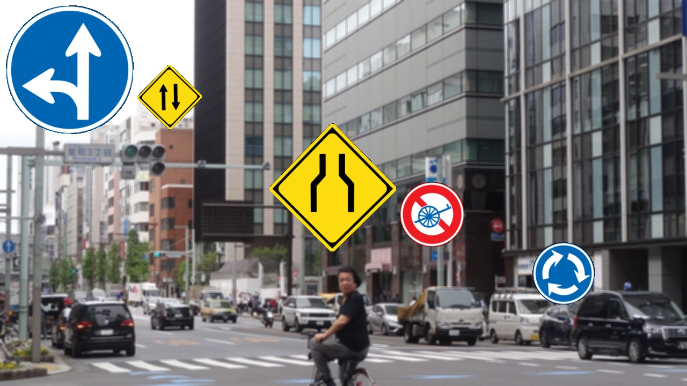
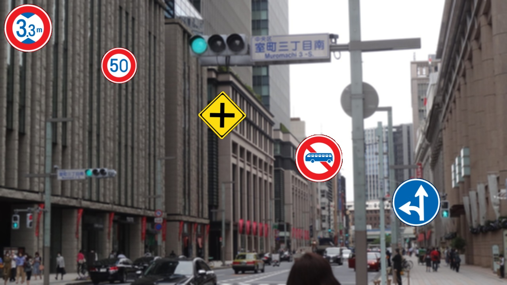
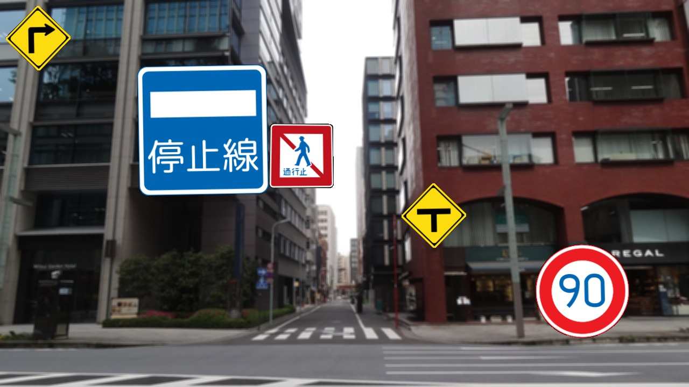
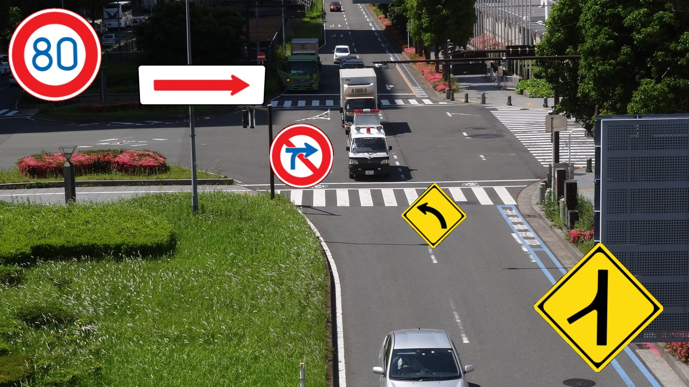
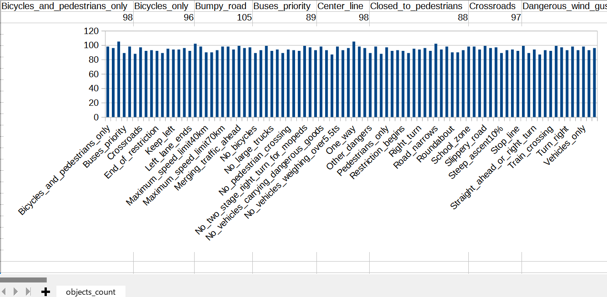

Antillia Realistic AutoAnnotation Tool (Updated: 2022/05/10)
This is an experimental project to implement Antillia Realistic AutoAnnotation Tool(ARAAT) for Object Detection.
It generates a realistic image dataset for training and validation, which is artificially made from a small
real or realistic images, and annotate those images automatically for object detection.
For example, imagine to take a lot of real roadsigns pictures in US in a real world for
training of object detection task.
Probably, it is difficult to gather such a pictures, because the classes of roadsigns inUS is more than 160.
One of other approaches to alleviate the difficulties is
to generate a lot of realistic and artificial images from some real or realistic object images including illustration
by using any image augumentation methods.
In this project, we try to design and implement a Realistic AutoAnnotation Tool, which genenetes a
realistc images dataset,and annotation files to those images automatically,without any manual mouse operations
of a GUI-based annotation tool.
1 Antillia Realistic AutoAnnotation Tool
2 Generate Enhanced images
3 Create YOLO dataset
4 Create TFRecord dataset
5 Create COCO dataset
We have been using tensorflow 2.4.0 and Python 3.8 environment on Windows11.
Please clone this repository to your local machine.
git clone https://github.com/sarah-antillia/Realistic-AutoAnnotation-Tool.git
You can see the following tree structure by tree command, and the projects folder contains a sample project
Japanese-RoadSigns-90classes.
1.1 Folder tree structure
├─btemplate
└─projects
├─Japanese-RoadSigns-90classes
│ ├─background_test
│ ├─background_train
│ ├─background_valid
│ ├─configs
│ ├─PNG_Japanese-RoadSigns-90classes_small
│ └─PNG_Japanese-RoadSigns-90classes_tiny
└─template
1.2 Create a project
Please use ProjectCreator.py to create your own project.
python ProjectCreator.py dataset_name project_name
Please run the following command to create Japanese-RoadSigns-90classes project:
python ProjectCreator.py jp_roadsigns Japanese-RoadSigns-90classes
PNG_Japanese-RoadSigns-90classes_small: RoadSigns files of small size
PNG_Japanese-RoadSigns-90classes_small_tiny; RoadSigns files of tine size
Those PNG files have been take from the following websites:
en.wikipedia.org:Road signs in Japan
commons.wikimedia.org: Road signs in Japan
See also:
PNG_Japanese_RoadSigns_90classes
The following backgroud foloders contain background jpg images files, which will be used as the background images to generate
test, train and valid dataset.
background_test
background_train
background_valid
The ProjectCretator.py generates configs folder, which contain the following configuration files.
color_enhancer.conf
image_enhancer.conf
warp_rotator_small.conf
warp_rotator_tiny.conf
warp_trapezoider_small.conf
warp_trapezoider_tiny.conf
yolo2coco_converter.conf
yolo2pascalvoc_converter.conf
yolo2tfrecord_converter.conf
yolo_test_dataset_creator.conf
yolo_train_dataset_creator.conf
,and the following bat files under your project folder.
image_enhancer.bat
yolo2coco_converter.bat
yolo2pascalvoc_converter.bat
yolo2tfrecord_converter.bat
yolo_test_dataset_creator.bat
yolo_train_dataset_creator.bat
Please move to your project directory, and run the following image_enhancer.bat to augument original PNG roadsings images:
./image_enhancer.bat
This bat file is the followng.
python ../../ImageEnhancer.py ./configs/image_enhancer.conf train
python ../../ImageEnhancer.py ./configs/image_enhancer.conf valid
python ../../ImageEnhancer.py ./configs/image_enhancer.conf test
, and the image_enhancer.conf in configs folder.
;image_enhander.conf
[configs]
version = "2.0"
warp_rotator_config_small = "./configs/warp_rotator_small.conf"
warp_rotator_config_tiny = "./configs/warp_rotator_tiny.conf"
warp_trapezoider_config_small = "./configs/warp_trapezoider_small.conf"
warp_trapezoider_config_tiny = "./configs/warp_trapezoider_tiny.conf"
enhanced_images_dir = "./Enhanced_images"
This will generate the following enhanced image folders:
├─Enhanced_images_test
├─Enhanced_images_train
└─Enhanced_images_valid
3.1 Create train and valid dataset
In your projecr folder, please run the following yolo_train_dataset_creator.bat.
./yolo_train_dataset_creator.bat
python ../../YOLOTrainDatasetCreator.py ./configs/yolo_train_dataset_creator.conf master
yolo_train_dataset_creator.conf
; yolo_train_dataset_creator.conf
; 2022/05/10 Modified to use splitter to split yolo_master to train and valid when specified master specified
[configs]
version = "2.0"
[dataset]
name = "jp_roadsigns"
copyright = "antillia.com"
version = "1.1"
background_size = [512,512]
max_image_size = [240,240]
classes = "./classes.txt"
auto_splitter = True
[master]
backgrounds_dir = "./background_train"
images_dir = "./Enhanced_images_train"
output_dir = "./YOLO_Japanese-RoadSigns-90classes/master"
[train]
backgrounds_dir = "./background_train"
images_dir = "./Enhanced_images_train"
output_dir = "./YOLO_Japanese-RoadSigns-90classes/train"
[valid]
backgrounds_dir = "./background_valid"
images_dir = "./Enhanced_images_valid"
output_dir = "./YOLO_Japanese-RoadSigns-90classes/valid"
This bat file wll generate YOLO_Japanese-RoadSigns-90classes folder, which contain train and valid dataset(images and annotation files).
└─YOLO_Japanese-RoadSigns-90classes
├─master
├─train
└─valid
Sample images of train dataset
3.2 Create realist testdataset
In your projecr folder, please run the following yolo_test_dataset_creator.bat.
./yolo_test_dataset_creator.bat
yolo_test_dataset_creator.bat is the following.
python ../../YOLOTestDatasetCreator.py ./configs/yolo_test_dataset_creator.conf
,and yolo_test_dataset_creator.conf.
; test_dataset_creator.conf
[configs]
version = "2.0"
[dataset]
name = "jp_roadsigns"
copyright = "antillia.com"
version = "1.0"
background_size = [1280,720]
max_image_size = [240, 240]
classes = "./classes.txt"
[test]
backgrounds_dir = "./background_test/"
images_dir = "./Enhanced_images_test"
output_dir = "./realistic_test_dataset"
num_test_dataset= 100
This wll generate realistc_test_dataset folder, which contain test dataset(images and annotation files).
└─realistic_test_dataset
Sample images of realist_test_dataset
|
|
|

|
|

|
|

|

|

|
|

|
In your projecr folder, please run the following yolo2tfrecord_converter.bat.
./yolo2tfrecord_converter.bat
The yolo2tfrecord_converter.bat is the following.
python ../../YOLO2TFRecordConverter.py ./configs/yolo2tfrecord_converter.conf
,and yolo2tfrecord_converter.conf
; yolo2tfrecord_converter.conf
[configs]
version = "2.0"
[dataset]
name = "jp_roadsigns"
copyright = "antillia.com"
version = "2.0"
classes = "./classes.txt"
tfrecord_dir = "./TFRecord_Japanese-RoadSigns-90classes"
label_map_pbtxt = "./TFRecord_Japanese-RoadSigns-90classes/label_map.pbtxt"
label_map_yaml = "./TFRecord_Japanese-RoadSigns-90classes/label_map.yaml"
[train]
images_dir = "./YOLO_Japanese-RoadSigns-90classes/train"
anno_dir = "./YOLO_Japanese-RoadSigns-90classes/train"
[valid]
images_dir = "./YOLO_Japanese-RoadSigns-90classes/valid"
anno_dir = "./YOLO_Japanese-RoadSigns-90classes/valid"
This wll generate TFRecord_Japanese-RoadSigns-90classes folder, which contain train and valid tfrecords.
└─TFRecord_Japanese-RoadSigns-90classes
├─train
└─valid
YOLO annotation inspection(LabelImg)

Please run the following bat file to inspect the generated tfrecord.
tfrecord_inspect.bat
python ../../TFRecordInspector.py ^
./TFRecord_Japanese-RoadSigns-90classes/train/train.tfrecord ^
./TFRecord_Japanese-RoadSigns-90classes/label_map.pbtxt ^
./Inspector/train
Objects count in tfrecord:

Sample images in tfrecord:

Label map
label_map.pbtxt
See also:
EfficientDet-Slightly-Realistic-Japanese-RoadSigns
EfficientDet-Slightly-Realistic-USA-RoadSigns-160classes
In your project directory, please run the following command to convert YOLO annotation dataset to COCO annotation dataset:
,/yolo2coco_converter.bat
yolo2coco_converter.bat is the following:
python ../../YOLO2COCOConverter.py ./configs/yolo2coco_converter.conf
,and yolo2coco_converter.conf
; yolo2coco_converter.conf
[configs]
version = "2.0"
[dataset]
name = "jp_roadsigns"
copyright = "antillia.com"
version = "2.0"
classes = "./classes.txt"
[train]
images_dir = "./YOLO_Japanese-RoadSigns-90classes/train"
output_dir = "./COCO_Japanese-RoadSigns-90classes/train"
[valid]
images_dir = "./YOLO_Japanese-RoadSigns-90classes/valid"
output_dir = "./COCO_Japanese-RoadSigns-90classes/valid"